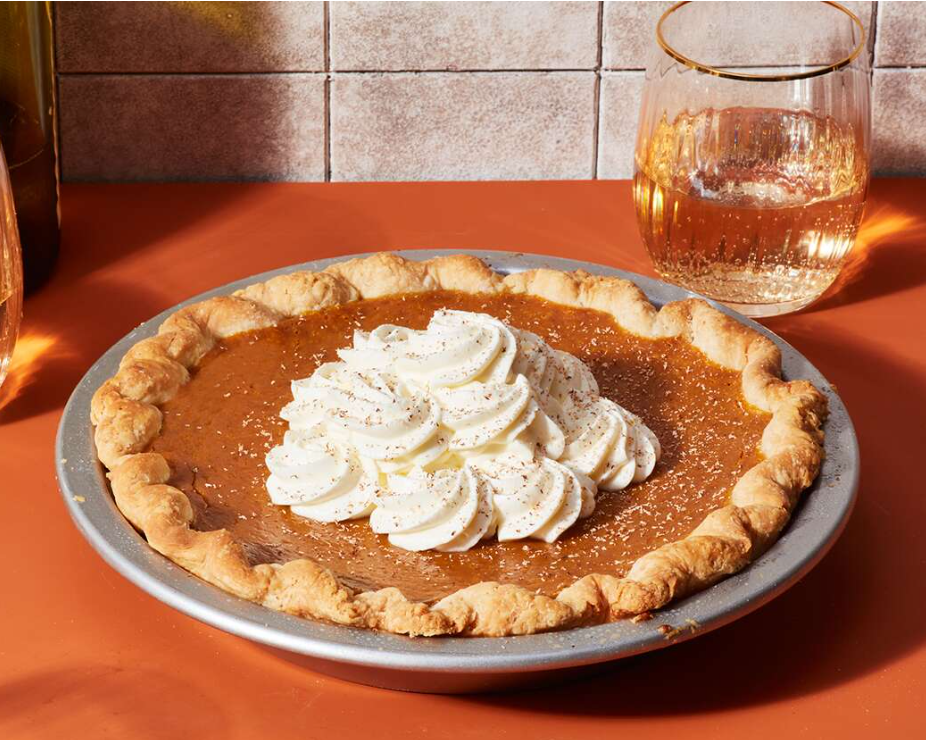
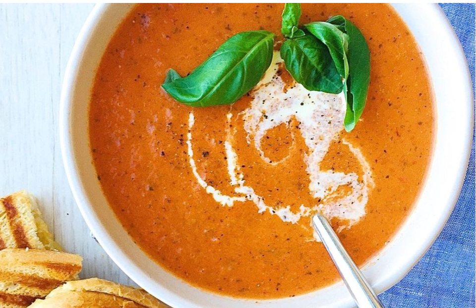

-
Perfect Pumpkin Pie
This delicious Pumpkin Pie is a classic dessert perfect for the fall season. Made with a flaky pie crust and a creamy pumpkin filling, it's a crowd-pleaser for any holiday gathering.
Ingredients:
- 1 1/2 cups canned pumpkin
- 1 (14 ounces) can sweetened condensed milk
- 2 large eggs
- 1 teaspoon ground cinnamon
- 1/2 teaspoon ground ginger
- 1/2 teaspoon ground nutmeg
- 1/2 teaspoon salt
- 1 (9-inch) unbaked pie crust
Instructions:
- Preheat your oven to 425°F (220°C).
- In a large bowl, combine the pumpkin, sweetened condensed milk, eggs, spices, and salt. Mix well.
- Pour the mixture into the pie crust.
- Bake for 15 minutes, then reduce the oven temperature to 350°F (175°C) and continue baking for 35-40 minutes or until a knife inserted near the center comes out clean.
- Let it cool before serving. You can also top it with whipped cream for extra deliciousness!
-
Tomato Basil Bisque
This Tomato Basil Bisque is a comforting classic, perfect for a cozy evening. Made with ripe tomatoes and a blend of herbs, it's a delightful soup that's easy to prepare.
Ingredients:
- 4 large tomatoes, chopped
- 1 onion, chopped
- 2 cloves garlic, minced
- 4 cups vegetable broth
- 1 teaspoon dried basil
- 1/2 teaspoon dried oregano
- Salt and pepper to taste
- 2 tablespoons olive oil
Instructions:
- In a large pot, heat the olive oil over medium heat. Add the chopped onions and garlic, and sauté until translucent.
- Add the chopped tomatoes, dried basil, and dried oregano. Cook for a few minutes until the tomatoes start to soften.
- Stir in the vegetable broth and bring to a boil. Reduce heat and simmer for 15-20 minutes.
- Use an immersion blender to blend the soup until smooth. Season with salt and pepper to taste.
- Serve hot, garnished with fresh herbs or croutons.